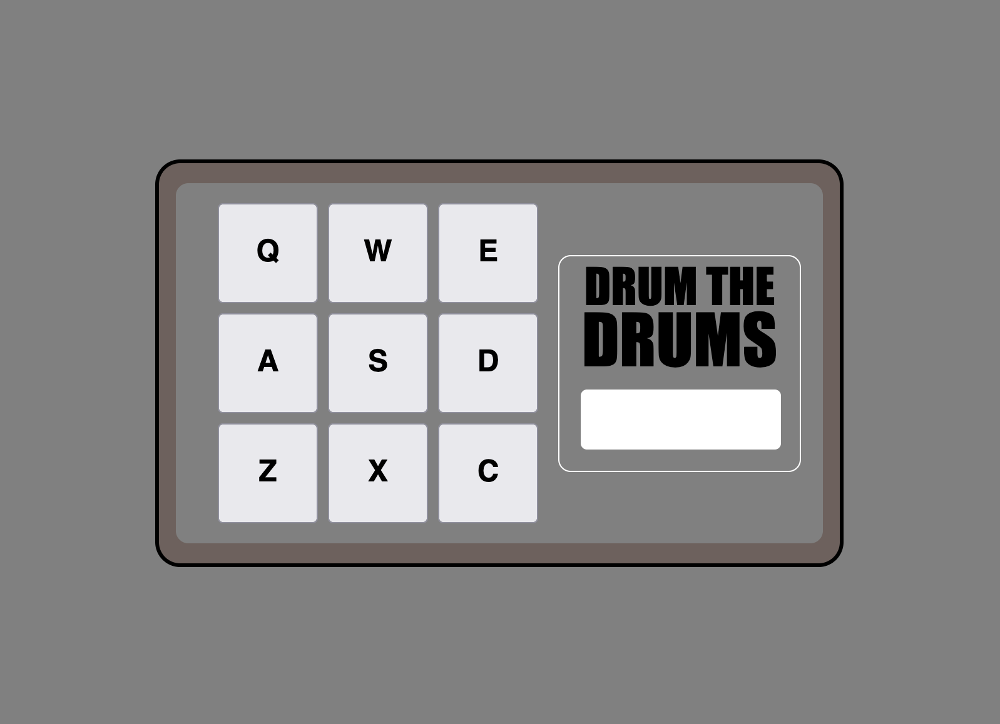

Cursos de FreeCodeCamp
Descripción:
Otro de mis primeros intereses durante esta etapa de formación fue el desarrollo front end, en donde utilicé principalmente el lenguaje JavaScript, junto con la librería React. Para aprender a utilizar estas tecnologías, tomé dos cursos ofrecidos por FreeCodeCamp, cada uno con proyectos finales en donde se muestra el dominio de las herramientas.
Tecnologías usadas:
- JavaScript
- React
Habilidades desarrolladas:
- Algoritmos y estructuras de datos con JavaScript
- Desarrollo front end con React